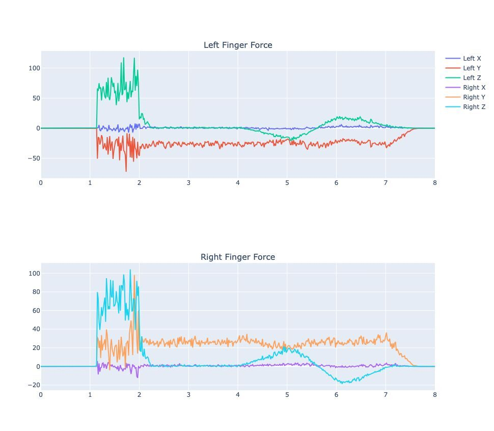
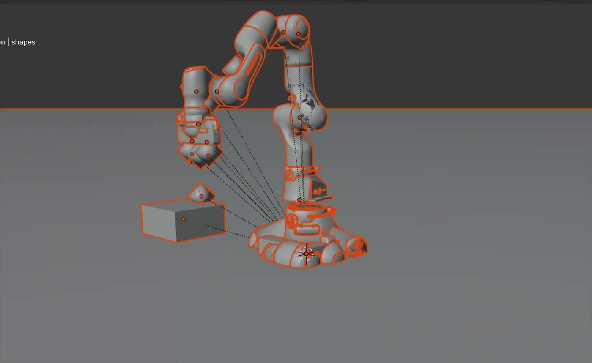

Force Sensing & Dynamic Manipulation

Overview
A set of simulation experiments in Newton on how a robot hand makes and keeps contact with objects, building up from a simple scripted pickup to measuring per-finger forces and throwing.
Box pickup with inverse kinematics
- Scripted a Franka arm to pick up a box by solving IK for waypoints placed relative to the box and interpolating between four states: start → above the box with gripper open → gripper closed → lifted.
- The gripper fingers aren't part of the IK chain, so they're driven by a separate open/closed state (0.04 m / 0.0 m per finger).
- Visualized the result in both Blender and Viser, and debugged contact forces between the robot and box.

Per-finger force sensing
- Picked up four objects (a box, a pen, the Stanford bunny and a cylinder), then rotated and wiggled them while recording contact force on each finger separately.
- Rotations ranged from ±π/4 for the box to ±π/8 for the smaller objects.
xArm7 throwing
- Brought the xArm7 into Newton and mapped its 7 revolute arm joints and 6 gripper joints.
- Built a forward throwing motion using only 3–4 of the joints, with rotation fixed so motion stays in the XZ plane, and checked whether the gripper was actually contacting the box.
- Next: throw objects with different URDFs, and compute the initial velocity and rotational inertia needed to pass through chosen middle and end points.